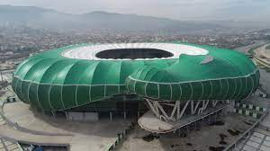

Bursa'da bulunan çok amaçlı bir stadyumdur. 24 Şubat 2011 tarihinde Bursa Büyükşehir Belediyesi'nin yaptığı ihaleyi Gintaş'ın [5] kazanmasıyla başlayan proje 21 Aralık 2015 tarihinde Cumhurbaşkanı Recep Tayyip Erdoğan tarafından açılışı yapılmıştır. Ali Sami Yen Spor Kompleksi ve Beşiktaş Park ile birlikte Türkiye'deki C90 görüş açısına sahip üç stadyumdan biri olan proje toplam 43.361 koltuk kapasitelidir.
Bursa Büyükşehir Belediye Stadyumu Bursa'nın Veledrom bölgesinde yer alır. Nilüfer deresine komşu olan stadyum Bursa Metrosu ile entegre durumdadır.
Oyun alanı 68 x 105 metre olan stadyumun kapladığı toplam alan 283 x 212 metredir. Stadyumda 3 zemin üstü kat, 2 bodrum kat ve ve 1 platform katı olmak üzere toplamda 6 kat bulunmaktadır. Yaklaşık 179 bin 611 metrekare betonarme inşaat alanı içeren Bursa Büyükşehir Stadyumu 8 bloktan oluşmaktadır. UEFA 2016 kriterlerine göre inşa edilen stadyumda 207 engelli koltuğu bulunan[6] Bursa Büyükşehir Belediye Stadyumunda 652 araç ve 2 otobüslük otopark hizmet verecekken, daha sonraki ihalede planlanan çevre düzenlemesi ile beraber açık alan dahil olmak üzere toplam 1562 araç ve 256 otobüse hizmet verecek 96 bin 151 metrekare otopark alanı oluşturulacaktır.[6]
Dünyada takımı stadı simgesiyle projelendirilen ve ender stadyumlardan biri olarak kabul edilen stadyumun çatısı Bursaspor’un simgesi olan ‘timsah’ görümündedir. Toplam 4 bin 484 metrekare alana sahip 72 adet locanın bulunacağı stadyumda 60 adet turnike ve 84 adet stat giriş kapısı yer almaktadır.[6]
The Telegraph gazetesinde Dünyanın en heyecan verici 10 stat projesi arasında Bursa Büyükşehir Belediye Stadyumu'nu gösterdi
